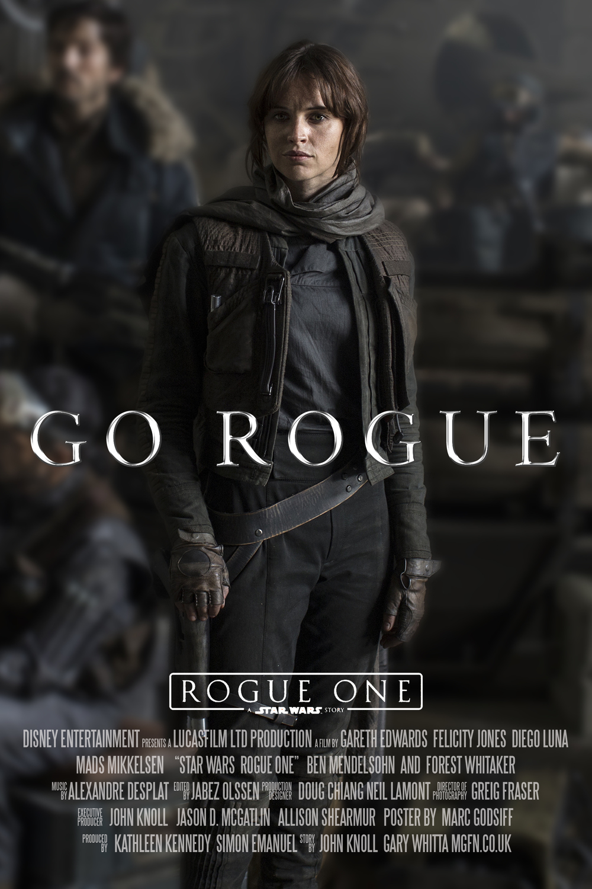

Poznámka: Spin-off (též odvozenina) je rozhlasové, televizní, poèítaèové nebo literární dílo, které bylo odvozeno od již existujícího díla (nebo více dìl) a které je zejména zamìøeno na urèitý aspekt pùvodního díla (napø. urèité téma, postavu, událost, apod.).
